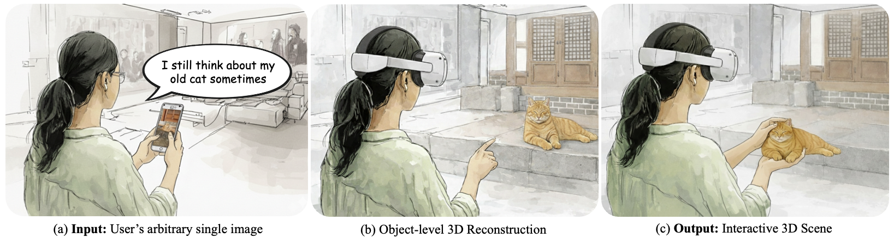
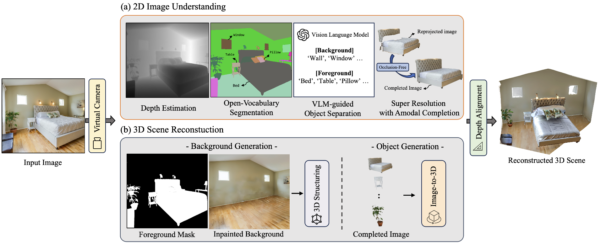
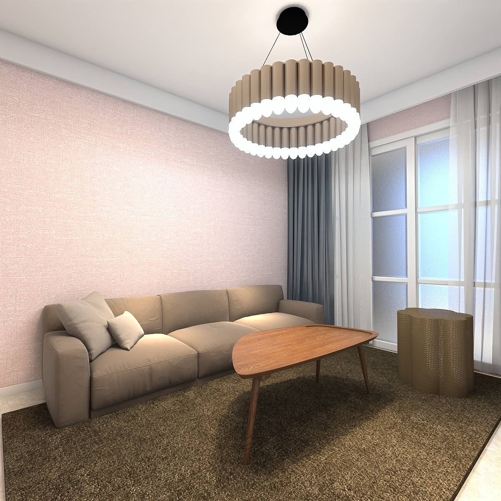
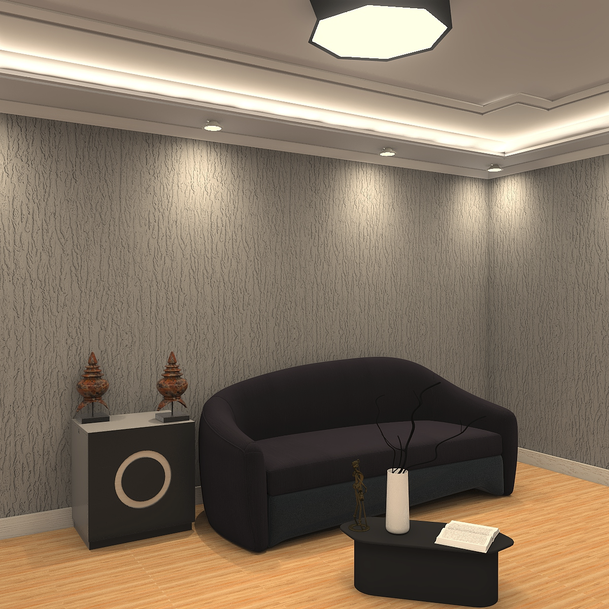
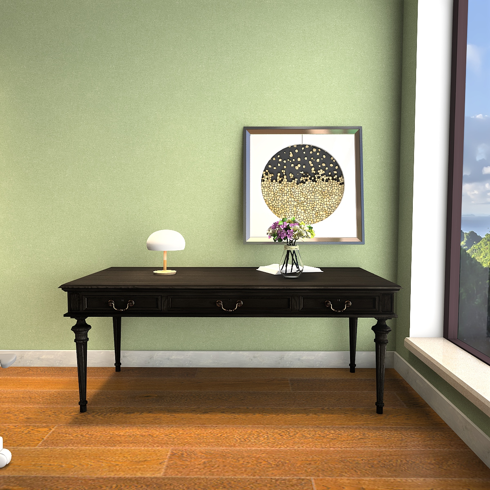
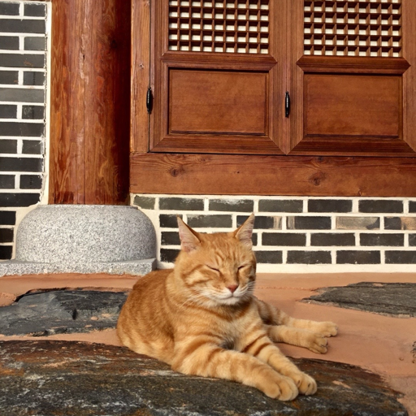
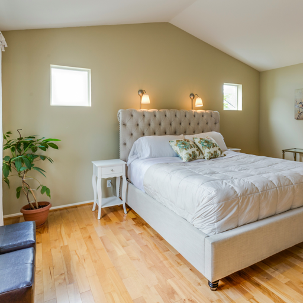
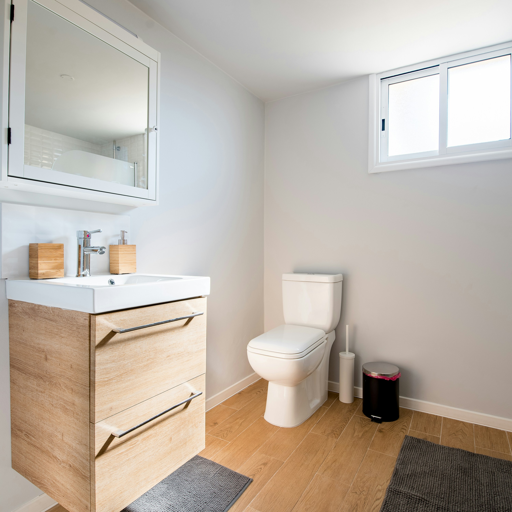

We introduce Mix3R, a training-free framework that reconstructs interactive 3D scenes robust to occlusions from a single RGB image by strategically integrating large-scale model priors.

We present Mix3R, a training-free 3D scene reconstruction frame work that enables immersive Mixed Reality (MR) interaction from a single real-world image. Despite recent progress in single-image 3D scene generation, existing methods often struggle with back ground recovery under occlusion and lack evaluations regarding natural interaction as well as immersion in MR environments. We address these challenges through a structured integration of large scale model priors, enabling geometrically consistent 3D scene reconstruction without additional training. The framework combines vision–language-guided foreground–background separation with depth alignment from back-projected point clouds to achieve reliable background completion while preserving detailed object geometry. Experiments on the 3D-FRONT dataset show that Mix3R improves reconstruction quality, reducing Chamfer Distance by over 23% and increasing object-level F-score by more than 6%, with additional gains in scene-level perceptual metrics. User studies on in-the-wild images further demonstrate higher user preference for the proposed method across diverse real-world scenes. These results indicate that our approach enables practical reconstruction of interactive MR spaces from a arbitrary single image.

Overview of the Mix3R pipeline. (a) Given a single input image, our system performs depth estimation, open-vocabulary segmentation, VLM-guided foreground-background separation, and super-resolution with amodal completion for 2D image understanding. (b) The foreground mask is then used to inpaint the background, and each object image is converted into 3D and integrated with the background. Finally, depth alignment is applied to reconstruct a compositional 3D scene from the single input image.





